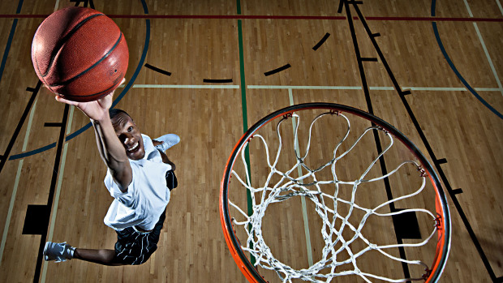
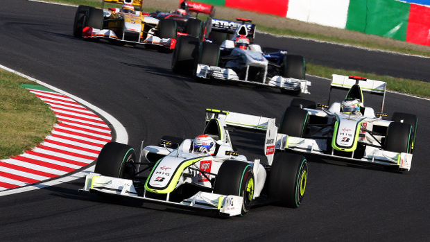

Sports
Football

Football refers to a number of team sports that involve, to varying degrees, kicking a ball to score a goal. Unqualified, the word football is understood to
refer to whichever form of football is the most popular in the regional context in which the word appears. Sports commonly called 'football' in certain places
include: association football (known as soccer in some countries); gridiron football (specifically American football or Canadian football); Australian rules
football; rugby football (either rugby league or rugby union); and Gaelic football.[1][2] These different variations of football are known as football codes.
Various forms of football can be identified in history, often as popular peasant games. Contemporary codes of football can be traced back to the codification
of these games at English public schools during the nineteenth century.[3][4] The expanse of the British Empire allowed these rules of football to spread to
areas of British influence outside of the directly controlled Empire,[5] though by the end of the nineteenth century, distinct regional codes were already
developing: Gaelic football, for example, deliberately incorporated the rules of local traditional football games in order to maintain their heritage.[6] In
1888, The Football League was founded in England, becoming the first of many professional football competitions. During the twentieth century, several of the
various kinds of football grew to become some of the most popular team sports in the world
Basketball

Basketball is a sport played by two teams of five players on a rectangular court. The objective is to shoot a ball through a hoop 18 inches (46 cm) in diameter
and 10 feet (3.048 m) high mounted to a backboard at each end. Basketball is one of the world's most popular and widely viewed sports.[1] The National Basketball
Association (NBA) is the most popular and widely considered to be the highest level of professional basketball in the world and NBA players are the world's best
paid sportsmen, by average annual salary per player.[2][3]
A team can score a field goal by shooting the ball through the basket during regular play. A field goal scores three points for the shooting team if the player
shoots from behind the three-point line, and two points if shot from in front of the line. A team can also score via free throws, which are worth one point,
after the other team was assessed with certain fouls. The team with the most points at the end of the game wins, but additional time (overtime) is issued when
the score is tied at the end of regulation. The ball can be advanced on the court by bouncing it while walking or running or throwing it to a teammate. It is a
violation to lift or drag one's pivot foot without dribbling the ball, to carry it, or to hold the ball with both hands then resume dribbling.
Formula One

Formula One (also Formula 1 or F1) is the highest class of single-seat auto racing that is sanctioned by the Fédération Internationale de l'Automobile (FIA).
The FIA Formula One World Championship has been the premier form of racing since the inaugural season in 1950, although other Formula One races were regularly
held until 1983. The "formula", designated in the name, refers to a set of rules, to which all participants' cars must conform.[2] The F1 season consists of
a series of races, known as Grands Prix (from French, originally meaning great prizes), held throughout the world on purpose-built F1 circuits and public roads.
The results of each race are evaluated using a points system to determine two annual World Championships, one for drivers, one for constructors. The racing
drivers are required to be holders of valid Super Licences, the highest class of racing licence issued by the FIA.[3] The races are required to be held on
tracks graded 1 (formerly A), the highest grade a track can receive by the FIA.[3] Most events are held in rural locations on purpose-built tracks, but there
are several events in city centres throughout the world, with the Monaco Grand Prix being the most obvious and famous example.